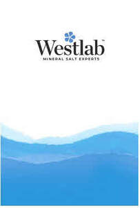
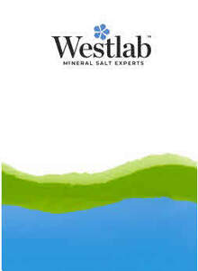
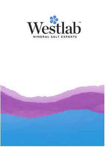
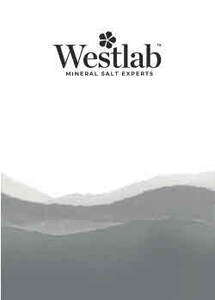

Trade Mark Journal No.2026/011 13 March 2026
UK00004347865 2 March 2026 (3,5,35)
Mark 1

Mark 2

Mark 3

Mark 4

- Class 3
- Non-medicated soaps; perfumery, essential oils, non-medicated cosmetics, non-medicated hair lotions; toiletries; body cleaning and beauty care preparations; skincare preparations; bath preparations; bath salts, not for medical purposes; bath bombs; body scrubs; face scrubs; foot scrubs; hand scrubs; exfoliating body scrubs; salt scrubs for the face and body; body masks; skin masks; mud-based body masks; mud-based skin masks; beauty masks; cleansing masks; hydrating masks; hair masks; body oil spray; aromatic extracts; mineral oils [cosmetic]; skin care oils [non-medicated]; bath gel; shower gel; face and body cream; face and body lotion; face and body milk.
- Class 5
- Pharmaceuticals and medical preparations; sanitary preparations for medical purposes; dietetic food and substances adapted for medical use; dietary supplements for humans; natural remedies; herbal preparations for medical use; herbal extracts for medical purposes; herbal sprays for medical use; herbal creams for medical use; mineral supplements; mineral salts for baths; mineral salts for medical purposes; medicated bath salts; medicinal sprays; anti-inflammatory sprays; homeopathic anti-inflammatory ointments and sprays; medicated muscle sprays; herbal muscle sprays; medicated muscle soaks; herbal muscle soaks; pharmaceutical preparations for treating skin disorders; natural clay for therapeutic purposes; anti-oxidants obtained from herbal sources; herbal detoxification agents.
- Class 35
- Retail and wholesale services including online retail and wholesale services in connection with the sale of non-medicated soaps, perfumery, essential oils, non-medicated cosmetics, non-medicated hair lotions, toiletries, body cleaning and beauty care preparations, skincare preparations, bath preparations, bath salts not for medical purposes, bath bombs, body scrubs, face scrubs, foot scrubs, hand scrubs, exfoliating body scrubs, salt scrubs for the face and body, body masks; retail and wholesale services including online retail and wholesale services in connection with the sale of skin masks, mud-based body masks, mud-based skin masks, beauty masks, cleansing masks, hydrating masks, hair masks, body oil spray, aromatic extracts, mineral oils [cosmetic], skin care oils [non-medicated], bath gel, shower gel, face and body cream, face and body lotion, face and body milk, pharmaceuticals and medical preparations, sanitary preparations for medical purposes, dietetic food and substances adapted for medical use, dietary supplements for humans, natural remedies; retail and wholesale services including online retail and wholesale services in connection with the sale of herbal preparations for medical use, herbal extracts for medical purposes, herbal sprays for medical use, herbal creams for medical use, mineral supplements, mineral salts for baths, mineral salts for medical purposes, medicated bath salts, medicinal sprays; retail and wholesale services including online retail and wholesale services in connection with the sale of anti-inflammatory sprays, homeopathic anti-inflammatory ointments and sprays, medicated muscle sprays, herbal muscle sprays, medicated muscle soaks, herbal muscle soaks, pharmaceutical preparations for treating skin disorders, natural clay for therapeutic purposes, anti-oxidants obtained from herbal sources, herbal detoxification agents.
Westlab Ltd
Representative: Appleyard Lees IP LLP